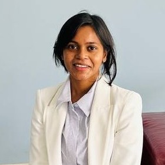

PhD scholar
IISc / ECE
Advisor: Dr. Parimal Parag
Email: moonmoonm@iisc.ac.in
Moonmoon Mohanty is a PhD scholar in department of electrical and communication engineering at Indian Institute of Science, Bangalore. She received her Bachelor’s in Electronics and Telecommunication from C V Raman College of Engineering, Odisha and Master’s in Electrical and Computer Engineering from Ajou University, South Korea. Her research interests are in performance optimization of large scale distributed heterogeneous systems.